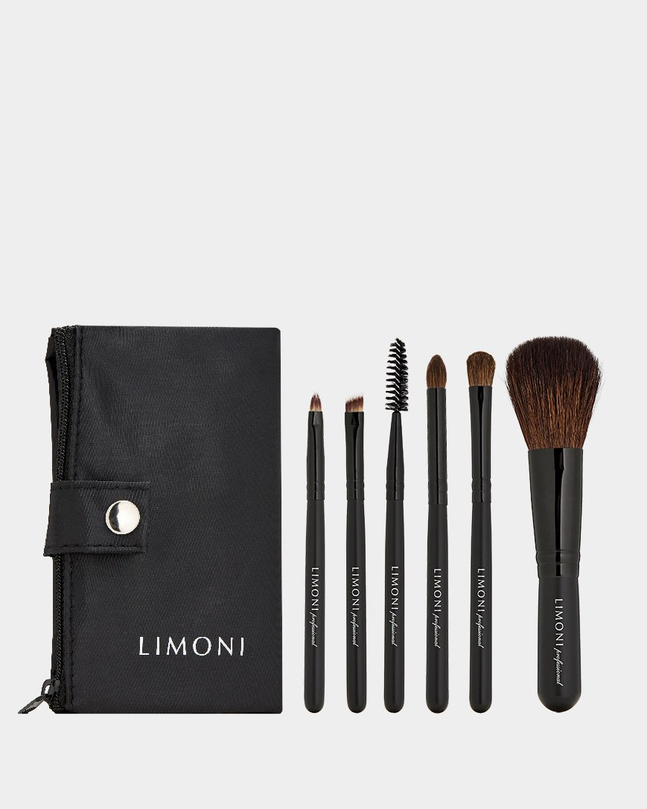

The Perfect Starter Kit
Unless you’re a dedicated collector, professional makeup artist, or beauty junkie, you don’t need to have many brushes. According to the experts, only a handful are necessary. “I think there are five essentials, maybe six if you factor in a concealer brush,” says makeup artist Troy Surratt, whose eponymous brand includes a lineup of ultra-luxury brushes handmade in Kumano, Japan. The trick to keeping things simple is finding tools that multi-task. “A good starter kit would be a medium density face brush that can be used in a multitude of ways,” says Surratt. “That can be used for powder, bronzer, powder foundation, and even blush.” After investing in a powder brush, Surrat suggests a petite face brush and three dedicated to eyeshadow. “You’ll want to have a fluffy brush that can lay color on the lid, a smaller one that is more of a pencil shape, and then a domed brush for adding color to the eye’s crease or definition to the lash line.” The final essential? A well-designed lip brush for perfecting your pout. “Some people are great at just swiping on their lipstick straight out of the tube, but the lip brush gives you that added precision,” says Surratt. “You’re able to create a sharper lip line and work the color into the texture of the lips, which results in a longer wearing, indelible look.”

BOBBI BROWN On Point Brush Set
gold apple 10 000 ₽Natural vs. Synthetic
One of the most important things to consider when selecting a makeup brush is the quality and type of hair it is made of. Many natural options include Saikoho goat, gray squirrel, silver fox, and even Kolinsky sable. Each type of material serves a different purpose, and it varies in terms of softness.Increasingly, brands are using synthetic materials like Taklon and Micro Crystal fiber that mimics the functionality of natural hair. “The technology behind synthetic hair brushes is so incredible [and] I can achieve a beautiful, refined application on myself and my clients working with them,” explains Gucci Westman, whose Westman Atelier range is handmade by Japanese artisans using cruelty-free nylon bristles and sustainably sourced birchwood from an FSC-certified forest. “Synthetic brush fibers can be shaped more like virgin hair [which] results in a soft feel and smooth application. The quality can so closely mimic natural ones that it can be hard to tell any difference upon the skin.”
The prevalence of synthetic materials is likely to increase as time progresses. Just as many fashion brands have committed to going cruelty-free with their ready-to-wear cosmetics, beauty houses are moving in a similar direction. To ensure that your purchases align with your ethics, be sure to check each tool you purchase and find out precisely what it’s made from.
The Art of Fude The very best makeup brushes come directly from Japan, where there is a rich history of brush making—there, artisanal brushes are called fude. Originally stemming from calligraphy, the handmade brushes produced in places like Kumano in Hiroshima prefecture are exquisitely crafted art pieces. “There are more than 100 brush workshops of various sizes in the area,” explains Fude Beauty CEO Takuya Fujiyama, who witnessed the region’s shift from manufacturing writing tools to creating beauty essentials. “The craft evolved from the traditional craft of calligraphy brush making, [so when] holding a Fude makeup brush you hold centuries of craftsmanship.”
Japanese brands like Shaquda, Chikuhodo, Koyudo, and Bisyodo are prized among makeup artists and collectors, who value the softness and unique touches like lacquered handles and hand-painted floral embellishments. The attention to detail is what separates the brushes from the competition; purchasing a fude tool is an investment intended to last a lifetime. Some rarer creations have price tags that can run into the hundreds and are (usually) reserved for a display case rather than daily use. “They are entirely handmade, including the sorting of bristles to ensure only the finest quality are selected to hand-bundling the bristles into various shapes,” says Fujiyama. “Bristles are left uncut to take advantage of the fine natural tips—this is what gives them the difference in softness, product pick-up, and smooth application.”
Why splurge on the fancy option? It’s all about elevating your makeup moments from routine to ritual. “It’s about more than the functionality,” says Osahiro Maruyama of artisan brush company Shaquda, whose all-wood Ubu line has won awards for innovation in design. “The designs can connect to your interiors or style. They’re brushes that are beautiful even when they’re just resting on your table [because] it enhances the experience you have while getting ready each day. ”
Loose Powder
Though powder is the final touch of most makeup looks, it's the first brush worth considering. A good powder brush can enhance the entire application process and, if selected wisely, can be used to also apply products like bronzer, highlighter, and even blush. Given its importance, powder brushes tend to be one of the more expensive items within a collection. If you’re going to invest in one type of tool, they’re usually the safest bet. The realities of your daily beauty routine are something to keep in mind while choosing. Fans of full glam will want something different than makeup minimalists. “The lighter and fluffier the hairs are, the softer and more natural the application will be,” says Surratt. “The denser hairs offer more opaque coverage. I always test by running my thumb over the brush head to see how densely packed the hairs are, and if it is packed tightly, it’s going to deposit a lot of product onto the skin.”
Oversized powder brushes are usually the first option that comes to mind, but bigger isn’t always better. Targeted product application can be as effective, especially for those who prefer to keep their complexions dewy.“More often than not, I find myself using a large eyeshadow brush to set makeup with,” says Hughes. “Under the eyes, around the nose, around the mouth, it works beautifully and gives me the utmost precision. The bigger brushes serve a purpose, but I’ve found that you can do more with the smaller ones.”
Blush
The wealth of blush formulations on the market mean that more than one brush can be devoted to the category. On social media and YouTube tutorials, the focus is always on pigment, but those high-impact powder blushers need to be applied with care. A good rule of thumb is the brighter the hue; the wispier and softer the brush should be. Are you swiping on neon orange or magenta? Opt for a flexible and feathery tool, like the Surrat Cheek brush. Applying a nude beige or light tint? Go for the dense Tom Ford Cheek Brush to make the most of the neutral. Liquid and cream blushes can be applied with your fingers, but if you require a brush designed specially for those formulations, opt for a multi-purpose synthetic like Koyudo’s Maikko, which is excellent for applying and blending out liquids.
Paying attention to the density of the hairs and the shape allows for maximum control of color payoff. “You want to be able to pick up saturated color in the center of the brush and have the shorter bristles around it diffuse that color,” says Surratt, who conceived the pom-pom design of his blush brush by considering the way it would fit against the apple of a person’s cheek. “The tool should always fit the size and shape of the area that you’re using it for.”
Foundation Few aspects of makeup application are as important as foundation. Creating a smooth, even base is essential, but there are multiple methods to achieve perfection. The best brushes for the task are often made from synthetic fibers, as they play well with cream and liquid formulas and are easy to wash.
While it is tempting to spread the product around on your face and hope for the best, makeup artist Katie Jane Hughes recommends priming the brush to achieve a seamless finish. “Instead of just squirting out the product and using your foundation brush to place it directly onto your face, you can work the product into the brush itself,” says Hughes. “When everything is merged with the brush’s bristles, your application is much smoother, and blending it all out is much quicker because you aren’t just depositing a blob of color directly onto the skin.”
Hughes knows a thing or two about skin; with the work she does for celebrities like Ashley Graham and Rosie Huntington-Whitely and in her stylized Instagram selfies, she’s able to make each person’s complexion seem naturally flawless, the product of great genes rather than layers of product. Her tools of choice include a range of shapes, from the classic paddle style to bristle-packed domed brushes perfect for buffing.
Baked Gelée
Everyone has something they’re eager to put a little concealer on, but the makeup bag MVP is best when it’s paired with the right brush. If you’re looking to cover circles under the eye, a small, somewhat dense brush with soft fibers or hairs is ideal for working with the delicate area. Pimples can be hidden using a small detail brush to cover the offending blemish without spreading product around. Given the amount of different issues concealer can be used to address, don’t be afraid to utilize a brush that isn’t labeled specifically for that task. “If you’ve got an eyeshadow brush that works great under your eyes or a lip brush that is the right shape for detail concealer work, then just use it,” says Hughes. “There are absolutely no rules!” Baked Gelée
The allure of a sculpted, contoured look is impossible to resist, but achieving the effect takes practice. It isn’t enough to play with light and shadow to create contrast; you have to blend the products. Hindsight is 20/20, and it’s easy to spot unblended contour in photographs or on Instagram, but such mistakes are easily avoidable. If your contour product is powder-based, use a light hand and a fluffy fan brush that leaves an error-proof finish. Cream contour is all about precision and a detail brush that doesn’t let you make thick, harsh lines. No matter what you choose, be sure to buff everything in so that it merges with any foundation, blush, or highlighter. Baked Gelée
Makeup technology is continuously evolving, and one of the newer categories is baked gelée products. While many traditional eyeshadows, blushes, and pressed powders are made by taking dry pigments and mixing them with binders and filler ingredients like kaolin clay or mica, bake gelée formulas are creams that are heated in a special oven until they form a solid. This process gives them a distinctive marbled look and hybrid texture that is soft to the touch without being moist. The product category—capable of delivering high shine, bold color, and a subtle blurring effect—has attracted plenty of passionate fans. “They all look so velvety and beautiful even on very dry skin; they are my absolute favorite,” says Swiss entrepreneur Sonia G, whose handmade brush line ranks among the world’s best. “I prefer to use natural brushes with them since the structure of the bristle gives the brush more strength to pick up this type of formula, to blend them or to work the application more efficiently onto the skin.”
Sonia recommends using brushes that are medium density and aren’t floppy. “Depending on the pigmentation of the product, a firm brush that moves smoothly and with discipline will apply and diffuse them more effortlessly,” she explains. “If you feel that you need to press very hard to get enough product onto the brush, this may end up damaging your brush as the bristles will weaken and break, so pick up a denser or firmer brush.”
Highlighter
The days of highlighters that can be seen from space are over, but the appeal of sparkle endures. The best brushes for the task will provide both lit from within glow and the aforementioned blinding flash, depending on how they are used. A small fan brush is a classic choice; its check hugging shape making it ideal for dusting on powders, but it’s far from the only option. Stippling brushes that utilize duo fibers (a mix of natural and synthetic) also work well, mainly when covering a larger surface area like the shoulders or collarbone. At the same time, longer tapered options target areas like the brow bone and tip of the nose that need only a hint of shine. Eyeshadow Laydown
If you have one eyeshadow brush within your arsenal, it is likely a paddle-style laydown tool. Excellent for packing product onto the lid or sweeping on a single shade for a one-and-done look, these workhorses are tried and true favorites. Materials vary and serve different specialties. Natural hair options include goat, which is excellent for distributing color, and squirrel, which is softer and better for light application of brighter shades. Synthetic fibers are wonderful for the creams and liquid formulations currently flooding the market—and just about everything else. Many people—including legendary makeup artist Pat McGrath—use their fingers to apply metallic and glittery eyeshadow. The technique works wonderfully, but brush companies have found ways to mimic it. Ultra-dense eyeshadow brushes allow you to achieve the same effect without getting your hands dirty.
Tapered Blending Brushes
Smokey eyes are a classic, and the best way to achieve them is through tapered blending brushes. These tools feature longer hairs and extend color in the eye’s crease or combine shades on the lid. Instead of relying on a single color, a good blending brush allows you to mix and create an ombre effect or take that one richly pigmented eyeshadow you have sitting at the bottom of your makeup bag and smoke it out for a beautiful monochromatic look. The right tapered brush can elevate your makeup game. “I think that they’re game-changers, and they’re not just good for a smokey eye,” says Surratt. “I have three sizes; the large one I use for powdering around the nose or to sweep a medium tone shade across the whole lid. The medium and small versions are perfect for shading and incorporating darker colors to your eyeshadow look to add depth.”
Eyeliner
You don’t have to go out and purchase a pencil; with a brush, any eyeshadow can be turned into a liner. Tools for lining run the gamut from dense pencil brushes—excellent for smudgy, rock n’roll inspired glam—to precision brushes designed to make thin lines and wings simple. Given the difficulty that many experience when attempting an Adele-style winged cat-eye or the elongated look of the “foxy” eye popularized by Bella Hadid and Kendall Jenner, new ergonomic options like Guide Beauty’s spatula-shaped liner applicator are making the task foolproof. Eyebrows
Eyebrows frame the entire face, and grooming them can be a multi-step process. Still, there is plenty that can be accomplished with a single brush. If your brows are sparse, a stiff angled option allows you to fill in large sections with a powder or gel to fake a bushy brow, while models with thinner tips let you draw on individual hairs and target any bald patches. Extra-wide angled brushes allow for lightning-fast application. Those already blessed with thick Brooke Shields-esque brows can benefit from a domed eyebrow brush used to place highlighter or the smallest amount of concealer directly onto the brow bone to add a little definition. There is also the good ol’ fashioned spoolie, which serves to brush hairs up or add in a bit of wax to achieve the “feathered” brow looks currently dominating Instagram and TikTok.
Clean Up & Care
Once you’ve got all your brushes in order, it’s all about taking good care of them. Storing them in a cup or brush holder is a functional and aesthetically pleasant way to keep track of everything. Keeping them clean is also essential, and there are an array of soaps and potions designed to ensure that they’re disinfected and well-maintained. Still, depending on the material they’re made from, over-cleaning can be detrimental to long-term usage. “You want to treat natural brushes with care; they are essentially hair, so cleaning them too often can cause damage to the follicle,” says Shaquda’s Osahiro Maruyama. “What we recommend is a gentle brush cleaner, one that doesn’t have too much alcohol in it. Daily you can also wipe your brushes off on a tissue or microfiber cloth to maintain them, but if they’re really in need of a deep clean, then it’s time to use soap or shampoo sparingly.” Manufactured fibers can handle being constantly washed and disinfected. “[Synthetic brushes] also stand up to more frequent cleanings than natural ones,” says Westman. “I can’t stand dirty makeup brushes, so that’s always been a huge factor for me.” After you’ve washed your brushes, there are even a few helpful tools to dry them properly. Hanging your brushes upside down prevents water from getting into the ferrule and handle, a problem that can eventually cause both to break.